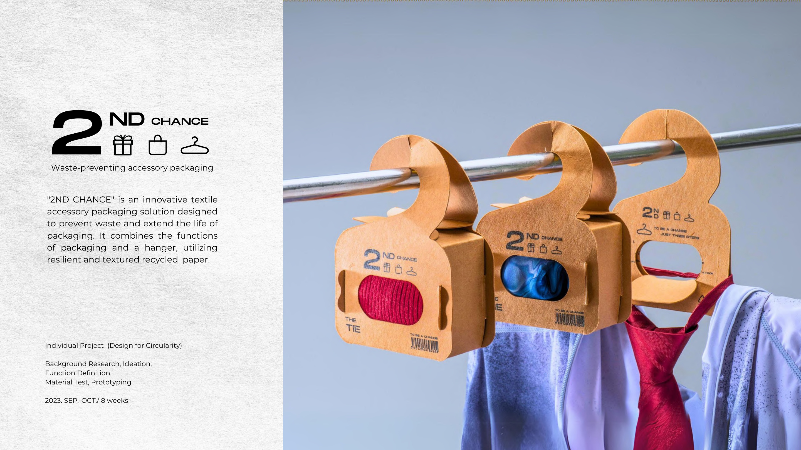
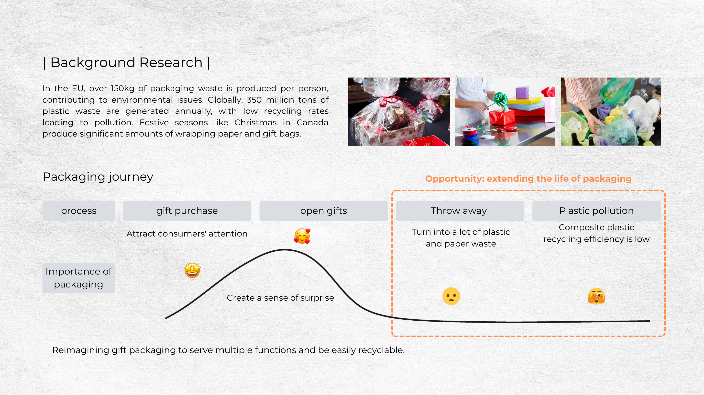
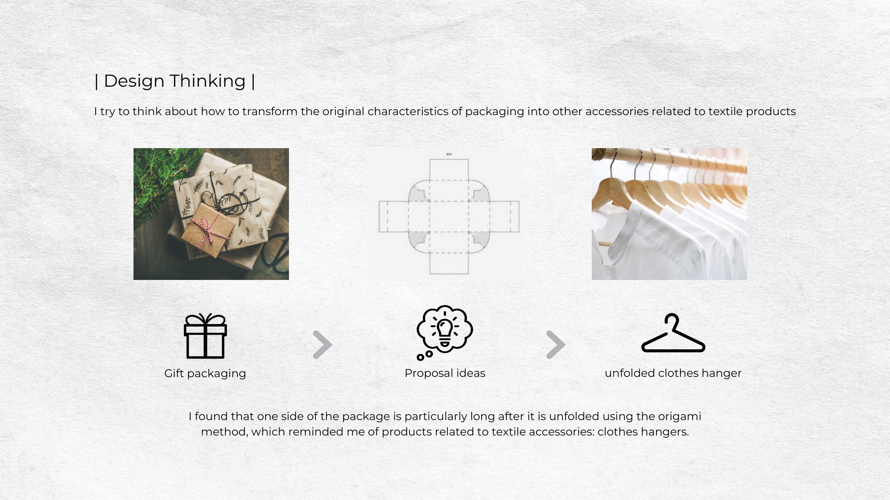
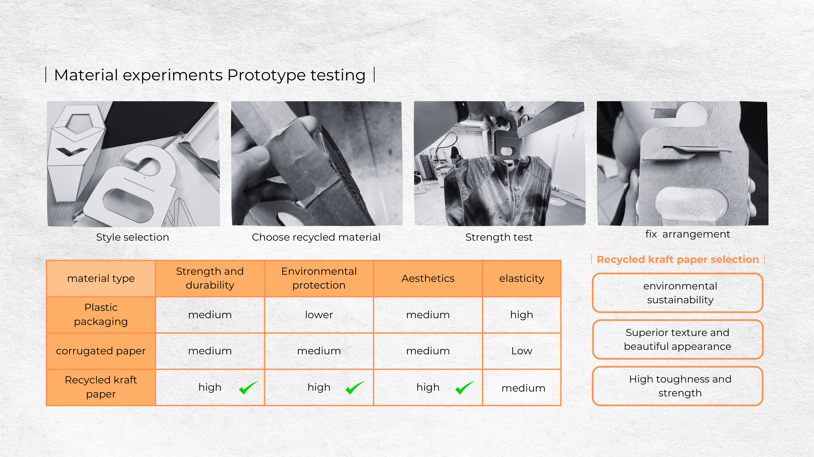
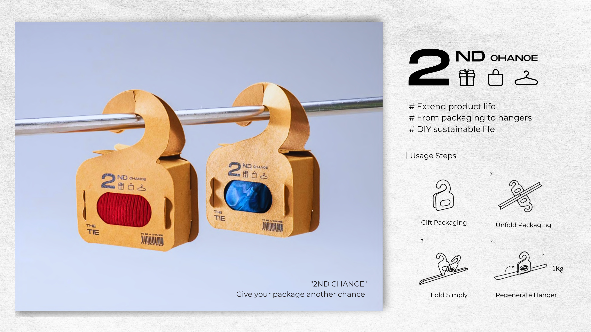
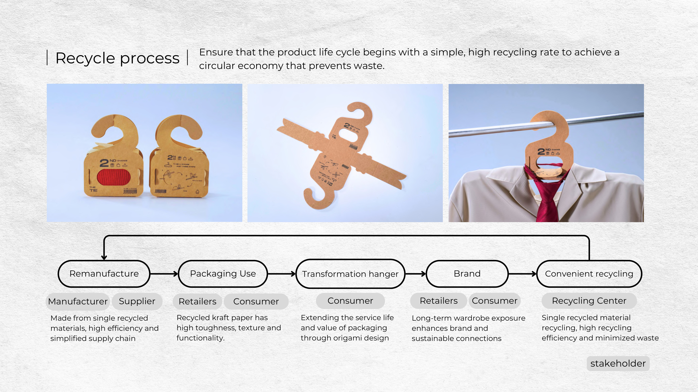

← All work

UG 05 — 2ND Chance
2ND Chance
Recycled-paper gift packaging that folds into a clothes hanger — design for circularity.
Recycled-paper gift packaging that folds into a clothes hanger — design for circularity.





